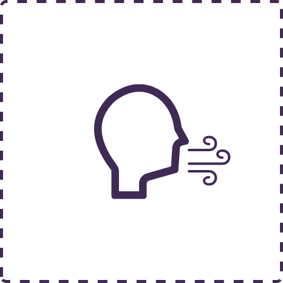

Before you begin

Content warning
This course has the potential to bring up thoughts, feelings, and trauma that may be overwhelming and confronting. We advise you to make your own well-being a priority. You may stop the course at any time. We encourage you to take breaks as needed, develop a plan for taking care of yourself during and after the course, and consult the linked resources and supports.
Before proceeding with the course, consider taking a few minutes to recenter yourself with a simple, 4-step breathing technique.
When you're ready, click the Start button below.
This activity uses audio. Please check your audio settings before proceeding.

